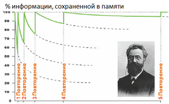

В психологии существует понятие spacing effect – эффекта, заключающегося в том, что информация запоминается лучше не тогда, когда она усиленно учится в какой-то короткий промежуток времени, а когда учится без лишних усилий, но в весьма отдаленные друг от друга периоды. Одним словом, лучше немного поучить сейчас и потом повторить через какое-то время, нежели пытаться все запомнить сразу. Существуют научные исследования, которые позволяют вычислять оптимальные интервалы между повторениями. Суть их в том, что сразу же после повторения слов вы тут же начинаете их забывать, и чем меньше вы работали со словами изначально, тем быстрее спадает эта кривая.
В ходе опытов было установлено, что после первого безошибочного повторения серии слов забывание идет вначале очень быстро. Уже в течение первого часа забывается до 60 % всей полученной информации, через 10 часов после заучивания в памяти остается 35 % от изученного. Далее процесс забывания идет медленно и через шесть дней в памяти остается около 20 % от общего числа первоначально выученных слов, столько же остается в памяти и через месяц (спасибо Герману Эббингаузу).
Существуют научные алгоритмы, которые позволяют вычислять оптимальные интервалы между повторениями. Суть их в том, что сразу же после повторения слов вы тут же начинаете их забывать, и чем меньше вы работали со словами изначально, тем быстрее спадает эта кривая.

Подобные алгоритмы, как правило, имеют вполне серьезную научную базу и проверяются на большой аудитории людей на предмет эффективности. Всю эту теорию и алгоритмы мы используем в iLearnWords, чтобы облегчить вам жизнь и помочь учить слова эффективно. Одним словом, штука мощная. Но тут лишняя реклама методики ни к чему. Лучше попробовать и убедиться на себе.